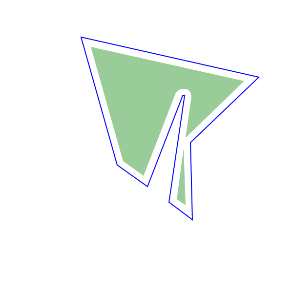
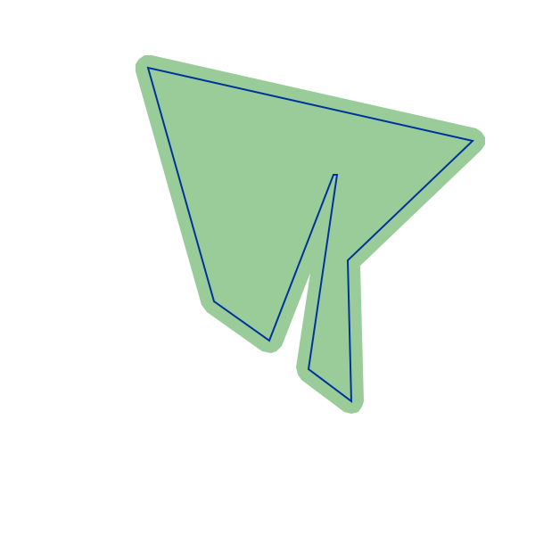
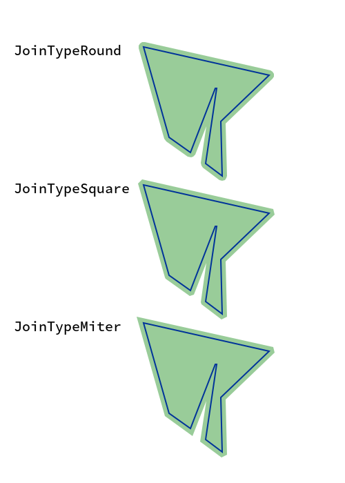

Clipper.jl
Clipper.jl is a Julia wrapper for Angus Johnson's Clipper library (ver. 6.4.2).
It can be used for the following two tasks:
- offsetting a polygon
- compute boolean operations between two or more polygons
General description of a polygon
A polygon consists of a list of vertices $v_1, \dots, v_n$ such that $v_1$ is connected to $v_2$ and $v_n$. $v_i$ is connected to $v_{i-1}$ and $v_{i+1}$. All functionality in Clipper only works with vertices that have discrete coordinates. Therefore the struct IntPoint is used. Points which consist of two floating point coordinates can however be easily converted using the IntPoint method.
p = (1.1, 2.1)
ip = IntPoint(p..., 1, 3) # [110, 210]Here 1 is the magnitude and 3 is the number of significant digits.
There is also the function tofloat which can be used to convert a IntPoint back to the floating point coordinates.
tofloat(ip, 1, 3) # (1.1, 2.1)Using broadcasting you can also easily convert several points like a whole polygon this way:
ps = rand(100, 2)
ips = IntPoint.(ps[:,1], ps[:,2], 1, 3)and back
tofloat.(ips, 1, 3)Offsetting a polygon
Original Clipper documentation.
A polygon can be offset (inflated/deflated) in the following way using Clipper.jl:
polygon = IntPoint[]
push!(polygon, IntPoint(348,257))
push!(polygon, IntPoint(364,148))
push!(polygon, IntPoint(362,148))
push!(polygon, IntPoint(326,241))
push!(polygon, IntPoint(295,219))
push!(polygon, IntPoint(258,88))
push!(polygon, IntPoint(440,129))
push!(polygon, IntPoint(370,196))
push!(polygon, IntPoint(372,275))
co = ClipperOffset()
add_path!(co, polygon, JoinTypeRound, EndTypeClosedPolygon)
offset_polygons = execute(co, -7.0) In the image above the blue polygon is the initial polygon and by offsetting it two polygons are created which are drawn as the filled green polygons.
We can also inflate the polygon by using a positive value in the execute function.
offset_polygons = execute(co, 7.0)
In this example we can visualize the meaning of the third argument in the add_path! function which is currently set to JoinTypeRound.
co = ClipperOffset()
add_path!(co, polygon, JoinTypeRound, EndTypeClosedPolygon)
round_offset_polygons = execute(co, 7.0)
co = ClipperOffset()
add_path!(co, polygon, JoinTypeSquare, EndTypeClosedPolygon)
square_offset_polygons = execute(co, 7.0)
co = ClipperOffset()
add_path!(co, polygon, JoinTypeMiter, EndTypeClosedPolygon)
miter_offset_polygons = execute(co, 7.0)
JoinTypeRound produces rounded corners, JoinTypeSquare produces squared corners. In the case of JoinTypeMiter it depends on the degree of the angle or in different words the maximum offsetted distance if corners. would not be squared. If the maximum distance is bigger than MiterLimit * delta than it is squared which would be the case in the upper right corner.
The MiterLimit is the first argument of ClipperOffset for example ClipperOffset(3.0) would set it to 3.0 (default is 2.0). delta is simply the distance we want to offset in our case above we set it to 7.0 as the second parameter of the execute function.
The three different types are also explained in the official documentation.
Boolean operations between two or more polygons
Needs to be written. Feel free to open a PR.